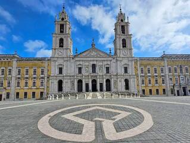
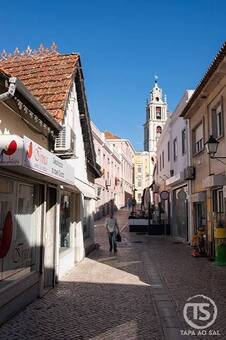
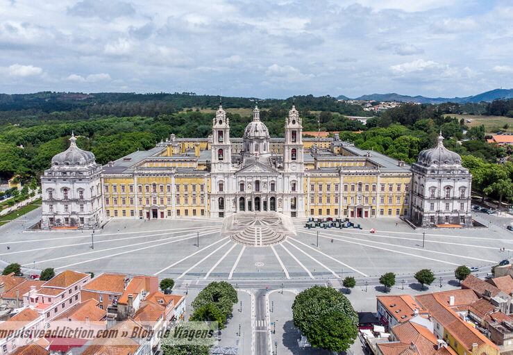
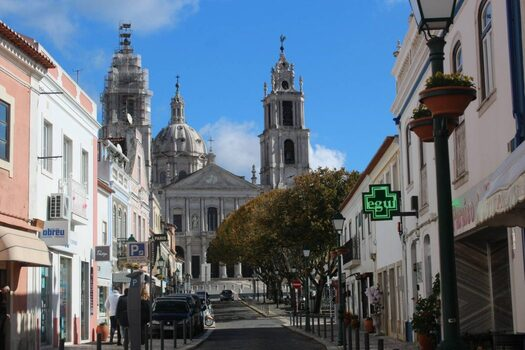

Informações
Sobre Mafra
Nesta página apresento algumas informações geográficas, históricas e culturais sobre a vila de Mafra.

Dados sobre Mafra
| Informações Gerais | ||
|---|---|---|
| Categoria | Informação | Detalhes |
| Geografia | País | Portugal |
| Distrito | Lisboa | |
| Património | Monumento principal | Palácio Nacional de Mafra |
| Construção | 1717 - 1730 | |

5 Curiosidades sobre Mafra
- O Palácio Nacional de Mafra é um dos monumentos mais importantes do barroco português.
- A Real Basílica de Mafra possui seis órgãos históricos.
- A biblioteca do Palácio Nacional de Mafra é conhecida pela sua coleção de livros antigos.
- Mafra possui uma extensa zona litoral, com várias praias junto ao Oceano Atlântico.
- O romance Memorial do Convento, de José Saramago, está relacionado com a construção do convento de Mafra.

